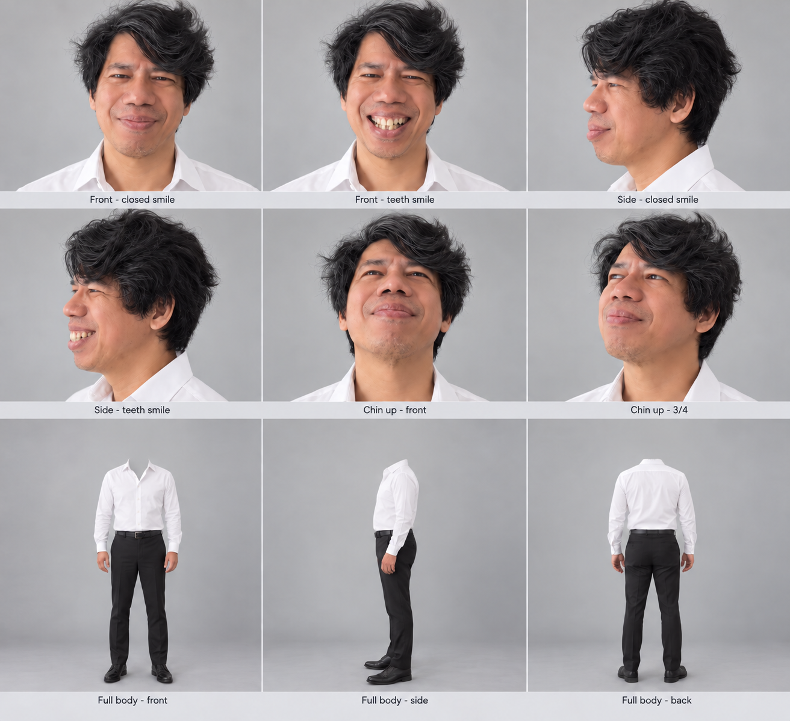
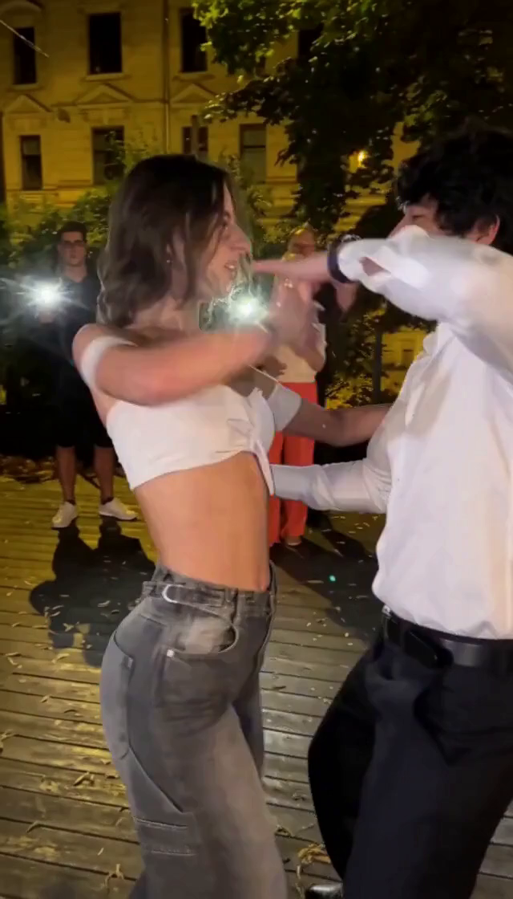
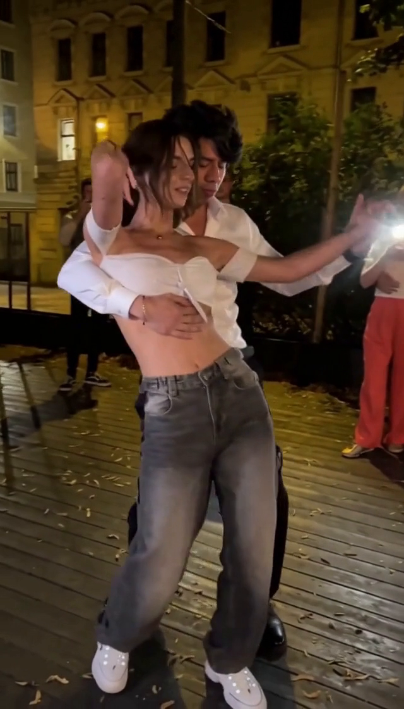
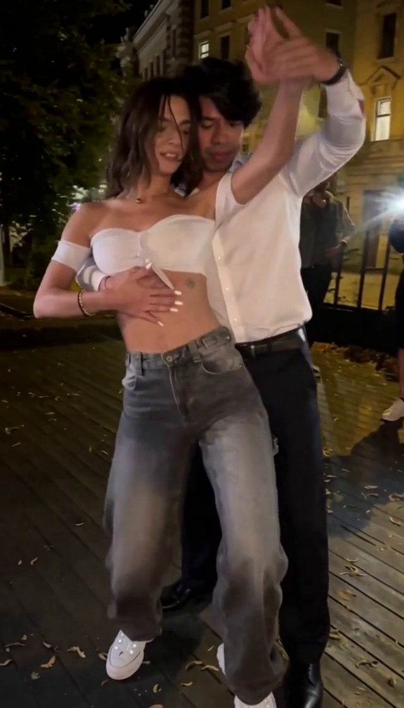
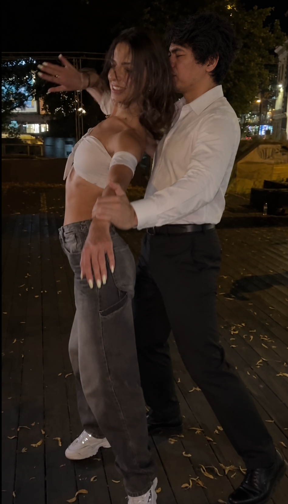
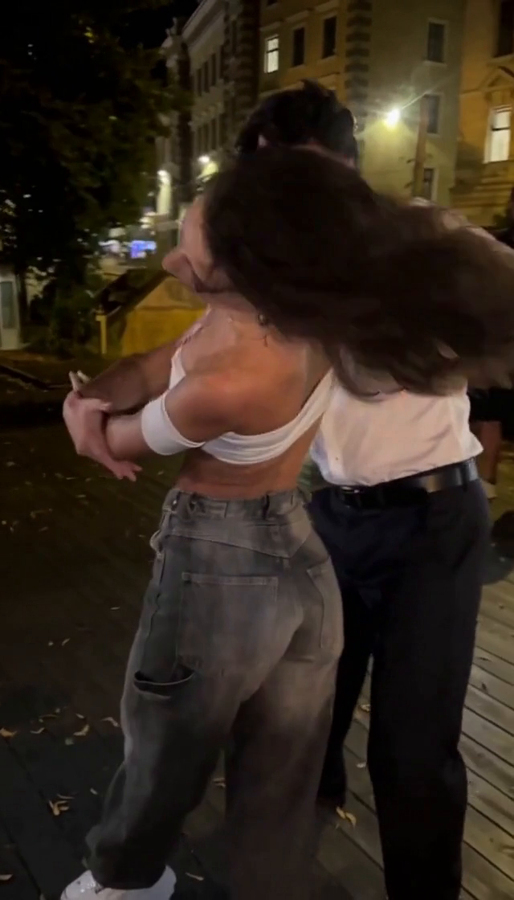
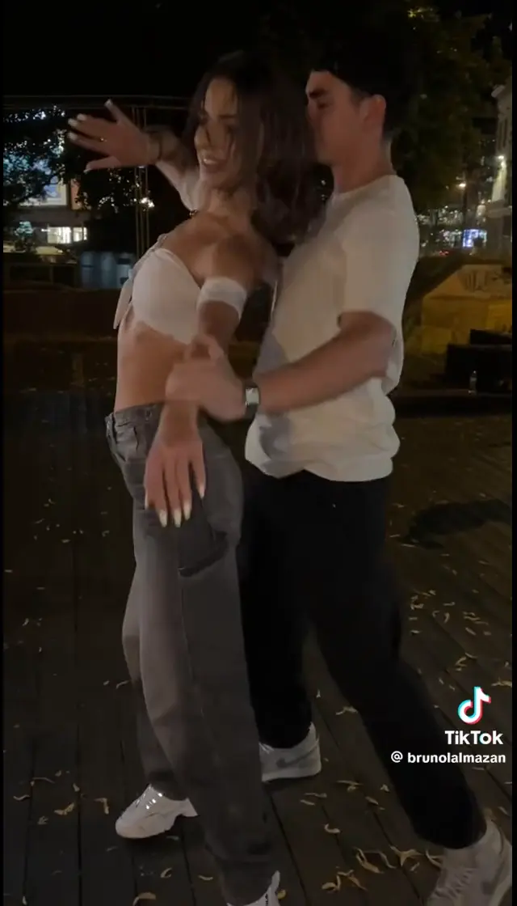

Keeping a digital double
on the beat.
Replacing a dancer is easy to describe. Keeping his face, his partner, the choreography, and the cut timing together took considerably more work.
The brief was to put my digital double into an outdoor partner dance: a white open-collar shirt, dark tailored trousers, black belt and shoes. The source would supply the movement, camera, gaze and expression. The reference would supply my identity and wardrobe.
We started with short tests, expanded to ten-second takes, and eventually assembled three longer replacement segments. The important discoveries came after assembly: a seamless timeline could still contain the wrong dance, and an attractive frame could still hide a weak identity match.
A face sheet, a wardrobe, and a guide video.
A single portrait was useful for resemblance, but it offered little help when the dancer turned, lifted his chin, smiled with teeth, or disappeared behind his partner’s hair. We moved to a nine-panel sheet: six face views and three full-body outfit views.

Removing the heads from the wardrobe row separated two responsibilities. We told H3 to use the upper face views for identity and the lower views for clothing. The six face views stayed authoritative even when a scene keyframe was added later.
The prompt described the reference face—rounded nose, full cheeks, softly defined jaw, sparse moustache and chin stubble, thick wavy hair—but also directed the model to transfer the source performance. A character-sheet smile should not become a permanent grin. Intentional source blinks and closed-eye moments should remain, rather than forcing bright, wide-open eyes into every frame.
Inverting only the target
We tracked the male dancer with an actor-anchored SAM3 mask, then inverted his colors while leaving his partner and the environment in normal color. This gave H3 a visible redraw hint. It did not erase the original man’s geometry or guarantee that the rest of the frame would remain unchanged.
We also tested target-only relative depth. It removed more color detail, but still carried the source face shape and provided less eye and mouth information. Crucially, H3 received that as an ordinary reference video—not as a dedicated depth-control channel.
We stopped blaming the seam and audited the source.
Fixed ten-second boundaries were convenient for testing. They were not necessarily good places to hide a character change. We reviewed the actual dance and selected two moments when the man’s face was blurred or obscured by his partner. The final screenshot matches landed at global frames 322 and 579, not at rounded “about 13.33” or “about 24.14” times.
| Section | Source frame range | Time interval | Delivered frames |
|---|---|---|---|
| Take 1 | [0, 322) | 0–13.416667s | 322 |
| Take 2 | [322, 579) | 13.416667–24.125s | 257 |
| Take 3 | [579, 927) | 24.125–38.625s | 348 |
| Original outro | [927, 1023) | 38.625–42.625s | 96 |
The frame numbers are zero-based on the normalized 24fps source. End boundaries are exclusive: take one ends at frame 321; take two begins at frame 322. There is no extra frame to duplicate and no gap to fill.
When the assembled replacement looked wrong, we cut and restitched the source itself first. All 1,023 decoded normalized source frames matched the pre-cut source exactly. Then we compared each source segment against its corresponding generation. That separated cut bookkeeping from an actual generation failure.
Watch the source-only restitch and inspect the evidence
Verification data records the source-restitch check, final frame counts and full-audio hashes. The source proof is against the normalized 24fps version, not a claim that resampling left the original 30fps file unchanged.
[310,591), then was trimmed to [322,579). Those extra 12-frame contexts on each side were meant to give overlap, but they were not the exact selected source cut. The generated opening pose was wrong. Trimming a different dance did not repair it.An inherited prompt also still named an old 18.625–30s interval. A Unicode-corrupted dash caused a literal text replacement to fail. We corrected the replacement logic and checked the submitted graph, not just the runner’s intended settings. The successful middle render retained that stale sentence, despite receiving the correct video; its saved corrected-text variant was not rendered again. The later first-take repair used the corrected sentence. We cannot attribute either outcome to that one sentence alone.
The middle take needed actual boundary poses.
The failed middle generation opened in a new upright embrace, while the source was already mid-turn. Its ending turn was delayed too. The guide was aligned, but the output had changed choreography. This was visible when source, rejected and repaired frames were compared at the same local times.
We regenerated the exact middle cut and chained two native Add Guide for MiniMax H3 nodes into its positive conditioning. They encode scene images through the video VAE and associate them with target-frame positions. They provide pose constraints; we still review the decoded video rather than assuming a guide guarantees exact pixels.
| Middle guide | Target-local frame | Where the image came from |
|---|---|---|
| Opening | 0 / global 322 | Prior take-one raw frame 322, one frame beyond its delivered frame 321 |
| Ending | 256 / global 578 | Take-three raw frame 11, one frame before its delivered first frame / global 579 |
Those unused context frames were useful as continuity images. We did not insert them as extra delivered footage. The repaired middle’s first and last poses matched the neighboring generated poses closely, and its sampled interior actions were much nearer the source.
Then 7–13 seconds drifted inside take one.
After the middle repair, the first take still went wrong. Around 9–11s it invented a premature side dip, while the source couple stayed upright. Around 12–13s it was following a different phase of the turn. This was inside one generated segment, so adjusting the stitch could not fix it.
We compared the source, the actual inverted guide and the result at matching times. The guide followed the source correctly. Inspection of the local loader also confirmed that the guide was not truncated: it decoded the full 24fps video. H3’s video VAE encoded the legal-grid frame sequence, while Qwen saw timestamped samples at 2fps. That distinction matters: sparse language-model sampling is not the same as discarding the full video conditioning.
Five anchors across the first take
We kept the same Eros checkpoint, resolution, sampler and seed, regenerated the exact [0,322) cut, and added guides at frames 0, 144, 192, 264 and 321. The first, six-second, eight-second and ending images came from the prior same-sheet generation. The crucial eleven-second pose came from a GPT image edit of the exact source frame, using the character sheet for identity and clothing.

Frame 0 · 0sPrior opening pose

Frame 144 · 6sRetain good action

Frame 192 · 8sRaised-arm pose

Frame 264 · 11sSource-matched edit

Frame 321 · 13.375sMatch next take

The edit instruction was deliberately narrow: replace only the man; retain source head size, side-facing orientation, expression, hand contacts, arm angles, foot positions, partner posture and background. We inspected that image before using it. A doctored frame that changes the woman’s pose would simply anchor the wrong choreography more strongly.
The full first-take repair took about 50.3 minutes on the local RTX 3090. The middle repair had taken about 34.1 minutes. We reviewed the new first take at half-second intervals across 7–13s, as well as first/middle/last frames and the assembled seams. These are two measured renders, not a speed benchmark for every H3 setup.
Protecting an overlap solved only part of the problem.
Shared source context around independent renders is not shared latent context. The earlier twelve-frame overlaps gave both takes some of the same input footage, but each generation could still choose a different pose. They did not create automatic seamless continuation.
We separately tested the Herrgotts H3 Infinite Continuation Suite, at the tested revision. Our local adapter used its masked-AV latent helpers on this Ref2VA replacement setup. This was an adapted experiment, not the repository’s unmodified FL2VA example.
The copied 39-frame sampled latent prefix was tensor-identical to the saved context. An uncompensated frame-change measure at the seam dropped from 14.014 to 7.479 on a 0–255 scale. That measure includes real motion; it is not a perceptual quality score. By roughly half a second after the seam, the continuation was already diverging from the source, and later it created an unwanted close-up.
An infrastructure mistake, too
During that detour, the assistant launched a reduced test whitelist on the main ComfyUI port instead of preserving the existing secure launcher. Existing nodes and the authenticated dispatcher bridge were disrupted. The user restored the normal secure startup, and its routes were checked afterward. The later pose repairs reused that running setup. The practical lesson: isolate node experiments and preserve the production launcher, rather than replacing it to make one test start.
A working recipe, with limits attached.
Native audio lock stays in the generation path. Pose guides modify positive conditioning; they do not replace the identity sheet or add extra delivered frames. After generation, we trim model-grid padding, assemble the exact exclusive cut ranges, and remux the original recording once over the full timeline.
| Final repair setting | Value used |
|---|---|
| Route / device | Local ComfyUI / RTX 3090, 24GB |
| Checkpoint | h3ErosMax_beta5.safetensors |
| Canvas / timebase | 640 × 1120 = 0.7168MP / 24fps |
| Sampling | 8 steps / er_sde / beta57 / denoise 1.0 |
| Seed / shifts | 100403 / video 12, audio 3 |
| First-take grid | 328 generated-grid frames / 322 delivered / 6 cloned tail frames |
| Middle grid | 260 generated-grid frames / 257 delivered / 3 cloned tail frames |
| Memory helpers | Feed-forward chunks 8; attention head chunks 4; Comfy Kitchen attention |
Exact model stack, node IDs, and compatibility notes
Text encoder: qwen3vl_32b_h3_ultra_uncensored_heretic_int8_convrot.safetensors. Video VAE: minimax_h3_video_vae_int8_convrot.safetensors. Audio VAE: minimax_h3_audio_vae_fp32.safetensors. The inherited graph also contains fasth3_vsa_gate.safetensors at strength 0.75. Its presence is not proof of useful acceleration or a verified Pocket AI “A-Step 768 Turbo” preset. This article documents the actual local graph rather than equating those names.
| Display name / class ID | Graph IDs | Category |
|---|---|---|
MiniMax References ManagerMiniMaxH3ReferencePack | 2 | MiniMax H3 |
MiniMax H3 Reference to VideoMiniMaxH3ReferenceToVideo | 14 | model/conditioning/minimax |
MiniMax H3 Native Exact-Audio LockMiniMaxH3NativeAudioLock | 15 | MiniMax H3/Native Audio |
SamplerCustomAdvancedSamplerCustomAdvanced | 20 | model/sampling/custom |
Video Combine 🎥🅥🅗🅢VHS_VideoCombine | 24 | Video Helper Suite 🎥🅥🅗🅢 |
Load ImageLoadImage | 40,42,44,46,48 | image |
Add Guide for MiniMax H3MiniMaxH3AddGuide | 41,43,45,47,49 | model/conditioning/minimax |
The middle uses image-loader IDs 40/42 and guide IDs 41/43. Guide frame indexes are target-local, not global source indexes. Native arbitrary-frame guide support and the helper node schemas must match the example. These workflows were tested on this Windows/CUDA installation; stock or older installations may differ. Models and node packages are not included in the download.
The local native guide schema accepts single images and legal-length guide clips. For this experiment we supplied single images. H3’s local video grid uses lengths 17k + 5; we padded only the tail, then discarded those frames. Changing the delivered timeline to fit the model grid would break the edit and audio alignment.
The checks that actually passed
The final source/comparison audio hashes also pass after the public web exports. The smaller previews use source excerpts, and the three-column failure comparisons are silent. Original-audio preservation does not prove perfect generated lip-sync or expression timing.
The gotchas worth carrying to the next project
- Review identity and action separately. A nicer face can accompany the wrong dance. A source-matched pose can still inherit the source actor’s nose.
- Choose hidden-face seams, but use clear identity references. An obscured face can be a good cut point and a poor portrait reference. The sheet supplies identity; a boundary image supplies pose.
- Inspect the actual submitted graph. A runner saying “corrected prompt” does not retroactively change a queued job. Preserve the failed graph and its result together.
- Do not trim away a choreography error. Cut ranges can be exact while a generated take is internally off-beat. Compare matched source and result times.
- Anchor a reviewed pose. Do not recycle a drifting frame as a “good” guide. Inspect an image edit for changed partner posture, contacts, face scale and occlusions.
- Check between anchors. Matching guide frames is not enough. We sampled the problem region every half second and reviewed the assembled boundary frames.
- Keep the soundtrack continuous. Use one original full recording at assembly rather than stitching independently encoded clip soundtracks.
- Treat completion as more than a finished queue item. Decode the export, check frame counts and timestamps, inspect the movement, then publish the take.
Inspect or recreate the first-take repair
Download workflow + guide + five anchor images · Canvas JSON · API graph
Copy the included input/ directory into your ComfyUI root, import the canvas, and check the required models and node schemas before queueing. The example is the inspected first-take graph with shareable relative asset paths and a new output prefix. No weights, credentials or private machine paths are included.
Verification data · Media provenance · Article source on GitHub
The current selected cut.
The large premature dip is gone, the repaired middle connects through the selected turns, and the timeline and audio checks pass. Small facial-expression, identity, hand, body and partner-detail variations remain. We corrected the prompt and added pose constraints together, so this is a practical improvement rather than a controlled claim about one magic setting.
Download the full result · Download source versus result · Return to the timeline ↑